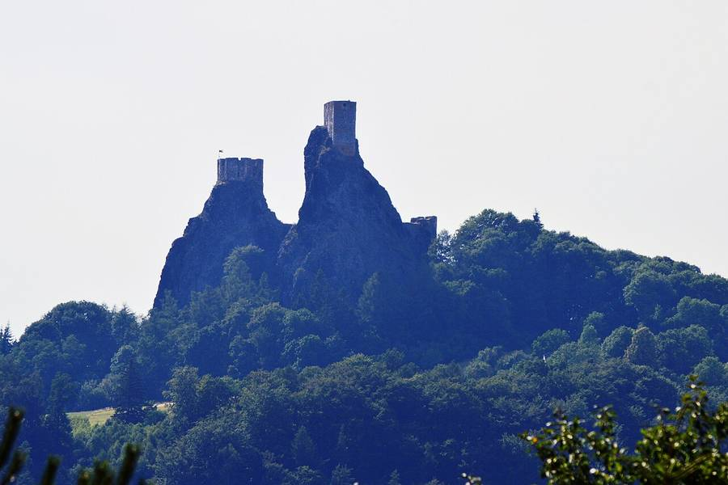
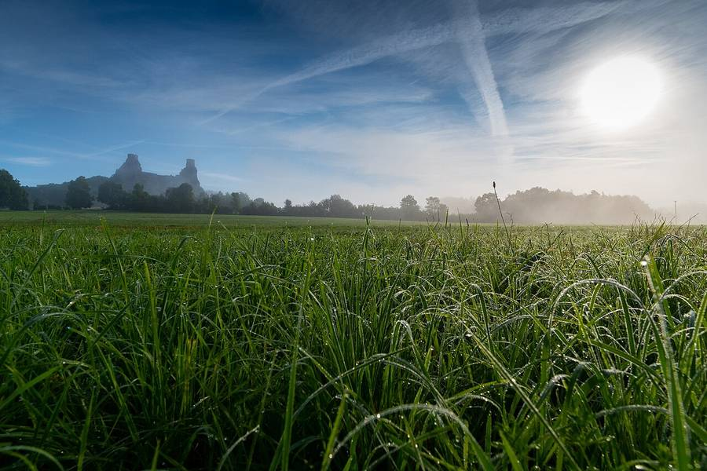
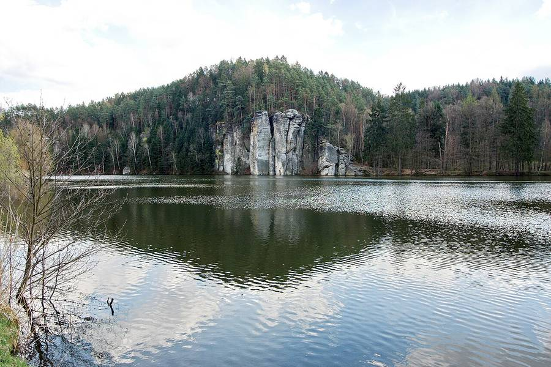
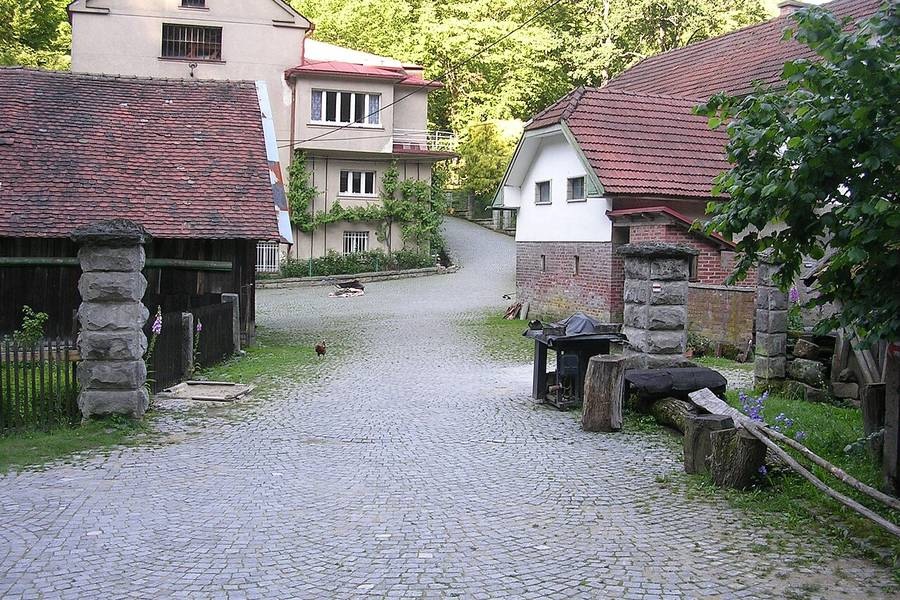
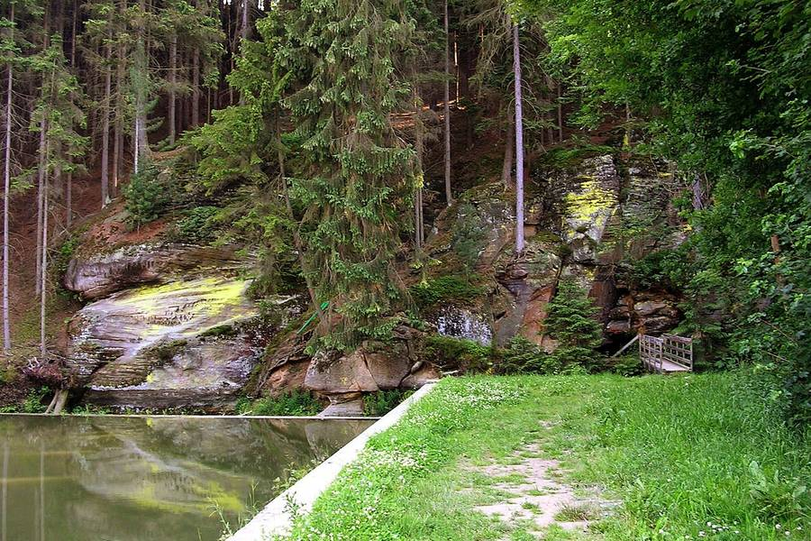
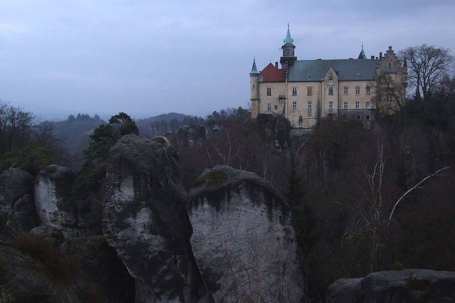
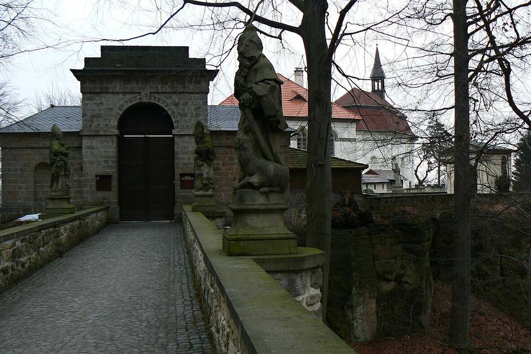

🏰Trosky
Sídlo Oty z Bergova a dominanta celé mapy — věže Panna & Baba. Okruh „Celým hradem“ (160/130 Kč, denně 9–17:30); v sobotu ale běžný okruh kvůli akci nejede. Na hradě 5 QR panelů hra vs. realita.
Přejezd z Blovic, ubytování a první turnovské pivo na uvítanou. Trosky si necháme na sobotu.
Celodenní KCD2 akce na Troskách — dobové ležení družiny Oty z Bergova. Vstupenku máte, tak si to užijte.
Nejhezčí procházka výletu po stopách hry — rybníky, pískovec a mlýny. Pak zpátky do Blovic.
Lokace z mapy „Trosecko“ a jejich reálné protějšky — projděte si je kdykoliv.

Sídlo Oty z Bergova a dominanta celé mapy — věže Panna & Baba. Okruh „Celým hradem“ (160/130 Kč, denně 9–17:30); v sobotu ale běžný okruh kvůli akci nejede. Na hradě 5 QR panelů hra vs. realita.

Ve hře Troskowitz s krčmou. Na vyhlídce 6. QR panel — pohled na Trosky přesně jako ze hry.

Rybníky sevřené pískovcem — ve hře setkání šlechticů a přepadení. Skály nad hladinou Věžáku, start nedělní procházky.

Mlýn mlynáře Krejzla — místo, kde se Jindra učí plížení (stealth tutoriál).

Ve hře úkryt pašeráků, dnes hospoda u rybníka mezi pískovcovými skalami — ideální na oběd u trasy.

Skalní město a zámek na pískovcových věžích, Mariánská vyhlídka s Troskami v pozadí. Okruh ~3–4 km — pokud zbude čas a síla.

Reálné fotografie lokací z Wikimedia Commons — díky jejich autorům:
Trosky © Scotch Mist · CC BY-SA 4.0
Od Troskovic © Pavel Kovaříček · CC BY-SA 4.0
Věžický rybník © Lubor Ferenc · CC BY-SA 4.0
Podsemínský mlýn © ŠJů · CC BY-SA 3.0
Nebákov © ŠJů · CC BY-SA 3.0
Hruboskalsko © Pudelek (Marcin Szala) · CC BY-SA 3.0
Valdštejn © Huhulenik · CC BY 3.0
✝Vytvořeno pro Vaška & spol. · Jesus Christ be praised!
Tip: v Safari → Sdílet → „Přidat na plochu“ = appka na ploše.
{kind=link}
{kind=link}
{kind=link}
{kind=link}
{kind=link}
{kind=link}
{kind=link}